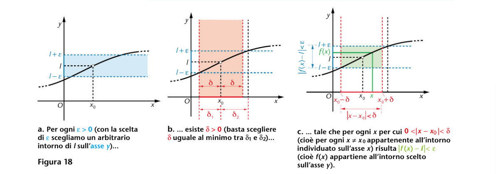
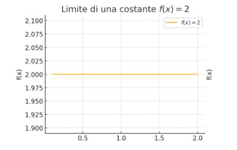
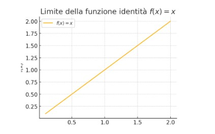
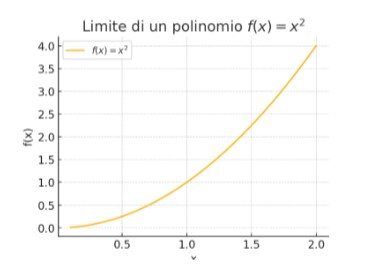
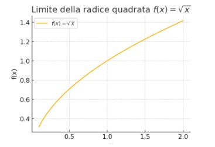
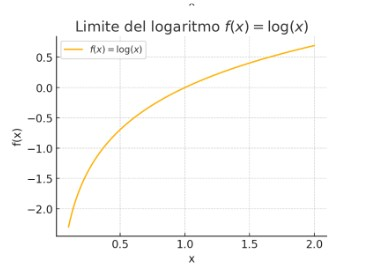

Teoria
Siano x₀ ed l ∈ ℝ.
Allora:
- Un intorno di l è un intervallo aperto che contiene l, cioè un intervallo del tipo (l - ε, l + ε), dove ε > 0. → In pratica, è "tutto ciò che sta vicino" a l, distante meno di ε.
- Allo stesso modo, un intorno di x₀ è un intervallo del tipo (x₀ - δ, x₀ + δ), dove δ > 0. → Quindi è "tutto ciò che sta vicino" a x₀, distante meno di δ.
Questa idea degli intorni serve per scrivere in modo rigoroso la definizione di limite.
In parole semplici: La funzione f(x) ha limite l per x → x₀ se, facendo x sufficientemente vicino a x₀ (cioè dentro un intorno di x₀, tranne eventualmente il punto x₀ stesso), il valore di f(x) rimane vicino a l (cioè dentro un intorno di l).
Scritta in simboli:
∀ ε > 0 ∃ δ > 0 tale che x ∈ (x₀ − δ, x₀ + δ) ∖ {x₀} ⇒ f(x) ∈ (l − ε, l + ε)
Per ogni numero positivo ε (anche piccolissimo), cioè per ogni "tolleranza" che vogliamo avere rispetto al valore limite l,
esiste un numero positivo δ (anche molto piccolo), che rappresenta "quanto vicino" dobbiamo prendere i valori di x intorno a x₀, tale che: ogni volta che prendiamo un valore di x dentro l'intervallo (x₀ − δ, x₀ + δ) ma diverso da x₀ (quindi ci avviciniamo ma non lo tocchiamo), allora il valore di f(x) starà sicuramente dentro l'intervallo (l − ε, l + ε), cioè sarà "vicino" a l.
In pratica: Quando diciamo che il limite di f(x) per x → x₀ è l, stiamo dicendo che:
Possiamo rendere f(x) quanto vogliamo vicino a l, semplicemente scegliendo x abbastanza vicino a x₀ (ma senza che sia proprio uguale a x₀).
La regola è:
Più piccolo scegliamo ε → più piccolo dovremo scegliere δ, ma la cosa importante è che questo δ esiste sempre.
Limite di una costante

Limite:
lim (x → a) c = c
Dimostrazione:
Per ogni ε > 0, dobbiamo trovare δ > 0 tale che:
0 < |x - a| < δ ⇒ |c - c| < ε
Ma:
|c - c| = 0 < ε (sempre vero, qualunque sia ε> 0)
Conclusione: Qualsiasi δ > 0 va bene.
Limite della funzione identità

Limite:
lim (x → a) x = a
Dimostrazione:
Per ogni ε > 0, dobbiamo trovare δ > 0 tale che:
0 < |x - a| < δ ⇒ |x - a| < ε
Questa è direttamente verificata se scegliamo δ = ε.
Limite di un polinomio (caso: x²)

Limite:
lim (x → a) x² = a²
Dimostrazione:
Per ogni ε > 0, dobbiamo trovare δ > 0 tale che:
0 < |x - a| < δ ⇒ |x² - a²| < ε
Si ha: |x² - a²| = |x - a| ⋅ |x + a|
Poniamo |x - a| < 1; allora: |x + a| ≤ |x - a| + 2|a| < 1 + 2|a|
Vogliamo: |x - a| ⋅ |x + a| < ε
Quindi, scegliamo δ = min {1, ε / (1 + 2|a|)}.
Limite della radice quadrata

Limite:
lim (x → a) √x = √a (a > 0)
Dimostrazione:
Per ogni ε > 0, dobbiamo trovare δ > 0 tale che:
0 < |x - a| < δ ⇒ |√x - √a| < ε
Uso dell'identità:
|√x - √a| = |x - a| / (√x + √a)
Per |x - a| < 1 e a> 0, abbiamo √x + √a ≥ √a.
Vogliamo:
|x - a| / (√x + √a) < ε
È sufficiente che |x - a| < ε ⋅ √a.
Scegliamo:
δ = min {1, ε ⋅ √a}.
Limite notevole del logaritmo

Limite:
lim (x → 1) log(x) = 0
Dimostrazione:
Per ogni ε > 0, dobbiamo trovare δ > 0 tale che:
0 < |x - 1| < δ ⇒ |log(x)| < ε
Si ha:
|log(x)| < ε ⇔ e^(-ε) < x < e^ε
Possiamo scegliere:
δ = min {1 - e^(-ε), e^ε - 1}.